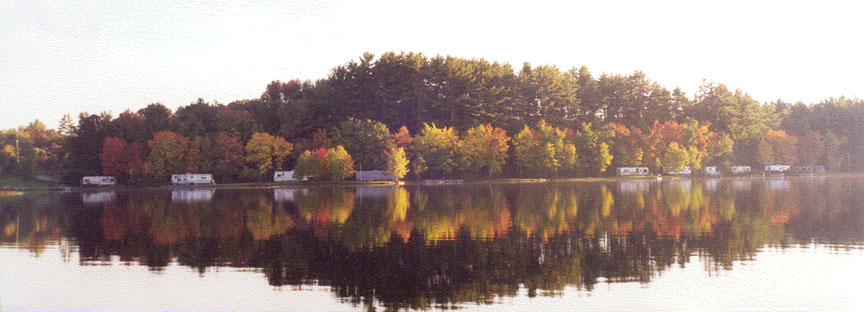
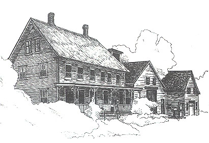

Ayers Lake Farm
Campground & CottagesSoutheastern New Hampshire's Family Campground
Camping as it should be !
Season: May 20 - October 15 |
|  |
For Family Camping: Ayers Lake Farm Campground
is the place for quiet, rustic family camping: Our Campground office is a
big, old New England farmhouse. You'll share our sunny
beach area, the cool, clean water and fine views of Ayers
Lake and Please make your
reservations now! Personal checks, money orders, credit cards, and cash accepted. Simply write or call: |
Mailing Address  |
Phone:
(603) 335-1110 |
Home | Attractions | Facilities | Rates
& Reservations | Rules | Cottages | Site
Map
©2020 Ayers Lake Campground. All Rights Reserved.